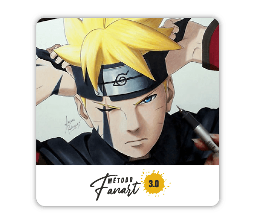

Aprenda a desenhar animes


- Pegar uma folha, um lápis e desenhar qualquer personagem de anime em poucos minutos.
- Entender a estrutura usada pelos criadores dos personagens para desenhar de forma perfeita.
- Ter a habilidade de desenhar em poucas semanas, diferentes de escolas tradicionais que demoram anos.
E ainda estará preparado para:
- Desenhar na frente dos seus amigos e familiares, mostrando a sua nova habilidade artística.
- Desenhar sem precisar copiar por cima, só olhando conseguirá desenhar qualquer personagem.
- Recriar no papel todas as melhores cenas e os melhores personagens mais marcantes para você.
Você conseguirá tudo isso, independente se você:
- Não nasceu com o “dom de desenhar”.
- Acredita que não tem idade para aprender (Temos alunos de 8 até 40 anos).
- Já tentou de tudo, até mesmo entrar em uma escola tradicional de desenho.
- E até mesmo caso você secretamente se sabote por acreditar (lá no fundo) que não é bom suficiente ou
que nunca conseguirá aprender a desenhar seus personagens favoritos.